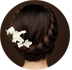
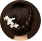

- 优雅型|
- 蓬裙型|
- 鱼尾裙|
- 及膝短式婚纱


FIND THE MOST
婚纱摄影是由一群热爱摄影并具有多年行业经验
的有活力、时尚的年轻人组成。摄影以
专业从事影视行业的连锁经营发展道路观，历
经多年耕耘，步履扎实，稳健
发展，在中国信息行业具有较强的
影响力。
 


Belong to your romantic
GREAT OF PHOTOG
婚纱婚纱是结婚仪式及婚宴时新娘穿着的服饰，婚纱
可单指身上穿的服饰配件，也
可以包括头纱、捧花的部分。婚纱的颜色，款
式等视乎各项因素，包括文化，宗教及
时装潮流等。婚纱来自
西方，有别于以红色为主的中式
传统裙褂。
Belong to your romantic
ClASSIC BEAUTY
对于纱系列的婚纱，往往“层”这个概念很重要。建
议选购纱系列时，在经济能力允许
的情况下，不要选择四层纱以下的产品。因为
层数太少，将会使婚纱看上去干瘪、没
精打采，不够挺实、蓬松，
无法体现纱质面料轻盈、浪漫、充
满幻想的感觉。
影响力。
Belong to your romantic
ClASSIC BEAUTY
过于复杂的制作工艺和装饰往往画蛇添足，将观者
的注意力吸引到婚纱的细
节上而忽略了着婚纱的女主人的美丽。特别
是那些整个裙摆都堆缀满了大花的
婚纱让目光不知何去何从。因此欧美婚纱倡导
简洁、大方的款式。当然，适当的
珠绣、蕾丝、蝴蝶结、丝带也是婚纱必不
可少的点睛之笔。

Belong to your romantic

欧洲款式的新郎礼服更能突显绅士气质，绅士本词最早出现在英国，当时的英国绅士手拿文明棍，头戴大礼帽，身着笔挺的西装，足登亮皮鞋。绅士给人的优雅的感觉，首先来自那身有条不紊的西装。欧美款的礼服，主要是不同式样的燕尾服以及军服式礼服，以简单的线条，塑造修长的身姿，与华美的宫廷式新娘礼服正好相得益彰。